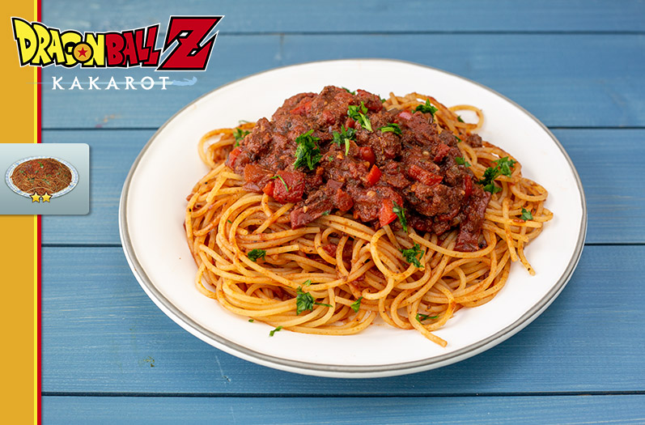

Home
DRAGON BALL Z: KAKAROT – WILD PASTA

Inspired by Dragon Ball Z: Kakarot, this recipe is designed to create an amazing meal that will boost your stats!
Ingredients
- 1 lb ground lamb
- 2 oz tomato paste
- 1/4 cup water
- 4 pieces duck bacon sliced
- 6 cloves garlic minced
- 1 onion diced
- 1 bell peper diced
- 1 cup dry red wine
- 28 oz can crushed tomatoes
- 1/8 tsp red pepper flakes
- 1 tsp sugar
- 1 1/2 tbsps oregano
- 1 tbsp thyme
- salt to taste
- pepper
- 1 package of pasta cooked
Instructions
- Generously season the ground lamb with salt and pepper. Combine the tomato paste and water in a bowl. Add
the crushed tomatoes and whisk together.
- Heat a large pan over medium-high. Add the duck bacon and cook until just cooked. Toss in the garlic and
cook for about a minute. Add the onion and bell peppers. Cook until the onions are translucent. Add the
ground lamb and cook until it starts to brown.
- Once the lamb has browned, add the red pepper flakes, sugar, oregano and basil. Add the red wine and let it
reduce by half.
- Finally, add the tomato mixture. Reduce the heat to low, cover, and simmer for at least 30 minutes. Toss the
pasta in the sauce and serve.
Home